ការថតរូប Position
5 Slides · ទីតាំង និងការដាក់자세ក្នុងការថតរូប
ការឈររបស់ model ត្រូវវាងខ្លួន 45° ទៅកាន់កាមេរ៉ា ដើម្បីបង្ហាញរាងកាយដ៏ស្រស់ស្អាត និងធ្វើឱ្យរូបភាពមើលទូលំទូលាយ។
- ដាក់ weight លើជើងម្ខាង ឱ្យស្ពាយ relax
- ដៃត្រូវ natural មិនឱ្យស្ទះខ្លួន
- ចង្កេះត្រូវបត់ស្ទើរ (slight curve)
- ខ្នងត្រង់ ក លើក ស្ញែង
ការអង្គុយ must ជ្រើសរើស angle ត្រឹមត្រូវ ត្រូវប្រយ័ត្នការ distort ជើង ឬ ដៃ ដែលធ្វើឱ្យរូបភាពមើល ugly។
- គ្មានពេលណាត្រូវ flat ជើងទៅរ flat
- ជើងផ្ចិតបន្ដិច ឱ្យ shape ល្អ
- ខ្នងដូចធ្វើ S-curve ស្ទើរ
- ដៃដាក់ lightly លើ knee
ការ pose ចលនា (dynamic) ធ្វើឱ្យរូបភាព alive ជាង static ។ ប្រើ movement ខ្លះ ដូចជា turning, walking ។
- ចង្អុលដៃ ឬ gesture ប្រើ prop
- ច្រឡំ angle ក្បាល ណែ Forward
- ដើរ ឬ ក្លែង motion ស្ងួត
- ប្រើ leading line ជា path
ការ tilt ក្បាលបន្ដិច ជារឿយៗធ្វើឱ្យ portrait ស្រស់ ។ Expression ស្រាក ឬ smize (smile with eyes) ។
- Tilt ក្បាល 5-15° ទៅ shoulder
- Chin forward & down ដើម្បី eliminate double chin
- Eyes soft, relaxed, focused
- ញញឹម genuine មិន forced
Camera angle ប៉ះពាល់ position ច្រើន ។ Shoot ពីខ្ពស់ (High angle) ធ្វើឱ្យ model ស្ទើរ ។ Shoot ពីទាប (Low angle) ធ្វើឱ្យ tall។
- High angle → face slim, eyes big
- Eye-level → natural & honest
- Low angle → legs long, powerful
- ជ្រើស angle ទៅ target ចង់បាន

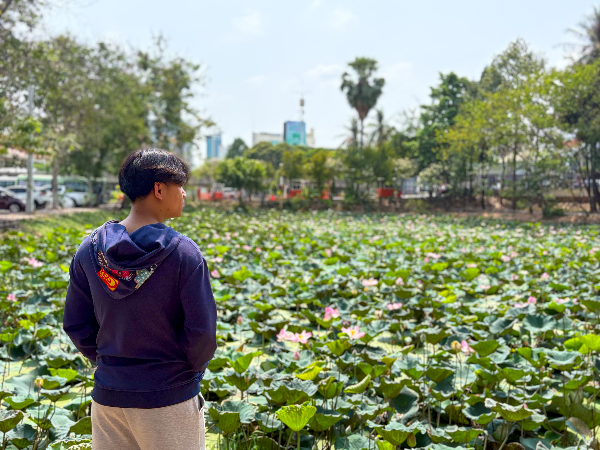

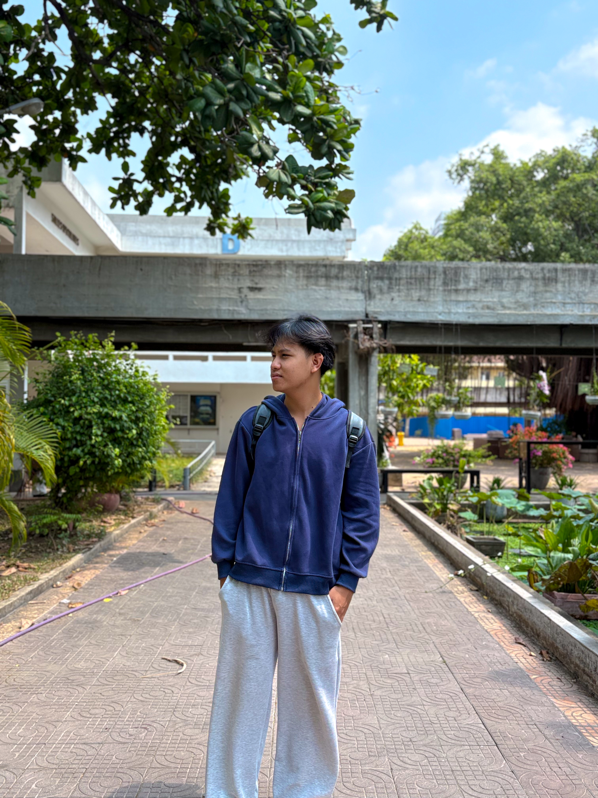
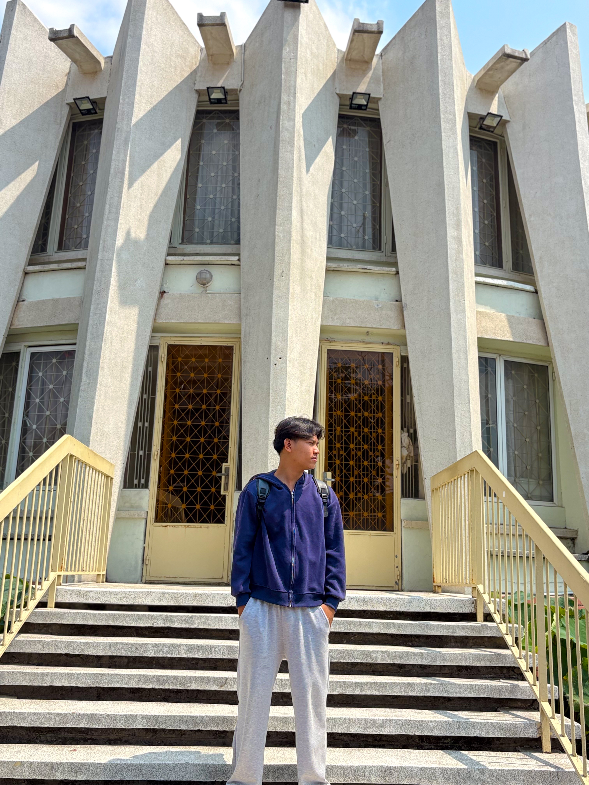
ការថតរូបផលិតផល និងសម្ភារផ្សេងៗ
5 Slides · Product & Still Life Photography
ពន្លឺសម្រាប់ product photography ជាធម្មតាប្រើ soft box ឬ natural light ពីប្ក window ។ Shadow control ជា key។
- ប្រើ white reflector ដើម្បី fill shadow
- Light ពីខាងឆ្វេងឬស្ដាំ 45° (Rembrandt)
- Backlit → rim light ស្រស់
- Diffuse light ដើម្បី soft shadow
Background ត្រូវ complement product ។ ប្រើ clean white, black, gradient, ឬ textured surface ដែល match ។
- White BG → clean, e-commerce
- Textured BG → premium, lifestyle
- Tone-on-tone → sophisticated
- Props ត្រូវ support product
Macro photography ថតលម្អិត texture, stitching, ឬ details ជាយថាហេតុ ។ ត្រូវប្រើ tripod ដើម្បី sharp។
- ប្រើ macro lens ឬ extension tube
- f/8-f/11 ដើម្បី detail sharp
- Remote shutter ដើម្បី avoid shake
- Light ជាក់ ដើម្បីឃើញ texture
Rule of Thirds, Flat Lay, Hero Shot ជា composition style ដ៏ popular សម្រាប់ product ។ ជ្រើស style ទៅ brand។
- Hero Shot → product ធំ center
- Flat Lay → top-down overhead
- 45° angle → show depth
- Negative space → luxury feel
Product photo ត្រូវ retouch ។ ដកflaw, adjust color, sharpen edges ។ ប្រើ Lightroom ឬ Photoshop ។
- Background removal ដាច់ស្អាត
- Color grading ទៅ brand identity
- Sharpen product, blur BG ស្ទើរ
- ដក dust, scratch ដោយ clone stamp
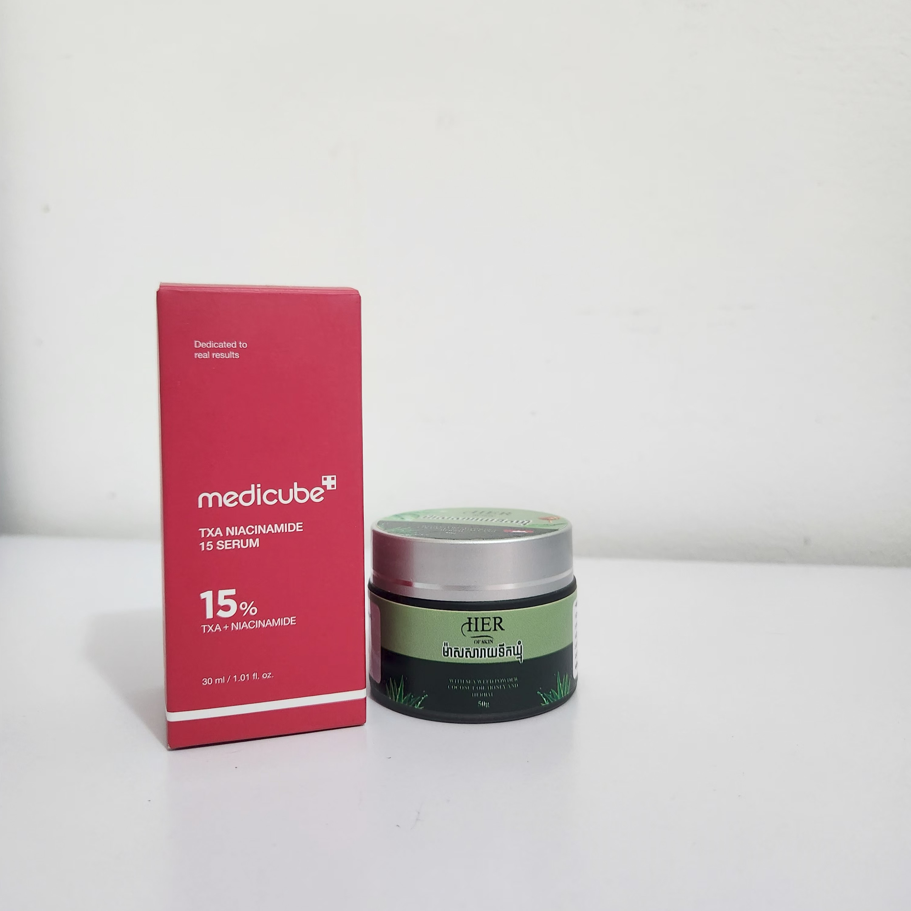
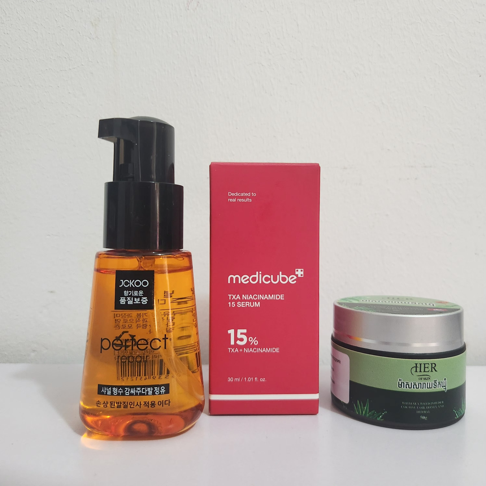
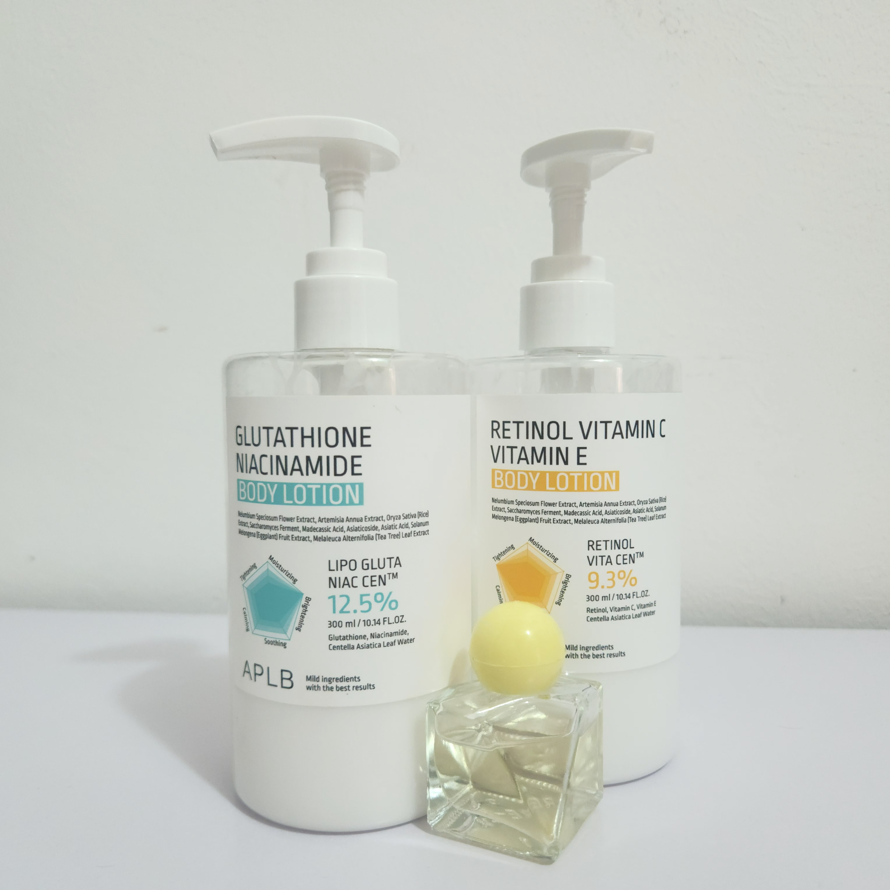
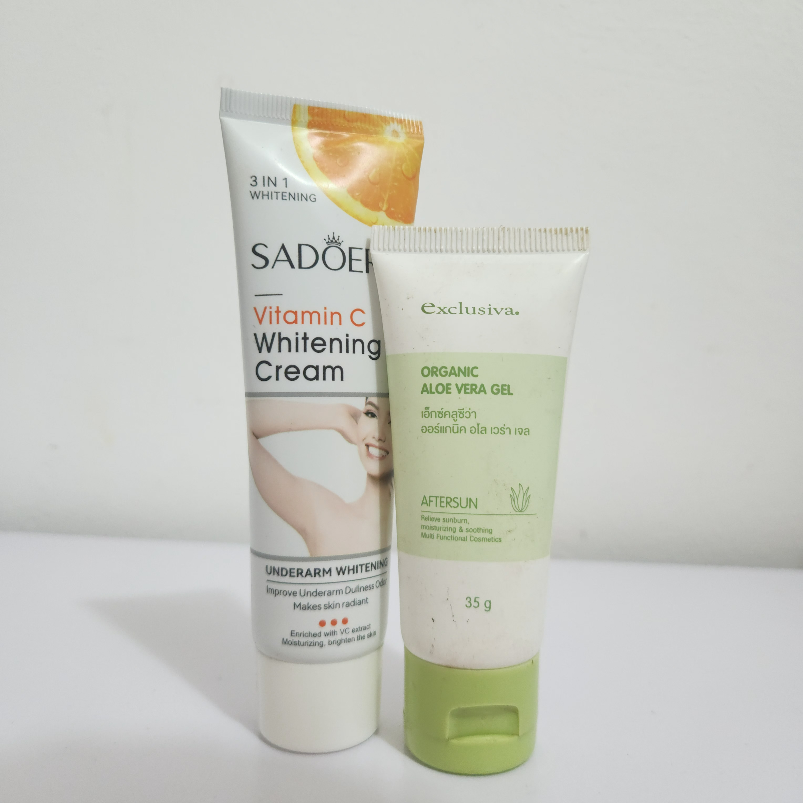
ការថតសកម្មភាព (Action Photography)
5 Slides · ចាប់ movement ក្នុង split second
ដើម្បី freeze motion ត្រូវ shutter speed លឿន ។ ជាប់ minimum 1/500s ឡើងទៅ ។ ត្រីឡើងលំហ → 1/2000s ។
- 1/500s → ជើងមនុស្ស walking/running
- 1/1000s → sports, cycling
- 1/2000s+ → birds, splash, ball
- Sport mode (AI Servo) ជួយ track
ប្រើ Continuous Autofocus (AI Servo / AF-C) ដើម្បី track subject ដែលចល ។ Burst mode ជួយ catch perfect moment ។
- AI Servo (Canon) / AF-C (Nikon/Sony)
- Burst mode → 10fps+ ប្រសើរ
- Zone AF ឬ Tracking AF point
- ចាំ anticipate action កុំ wait
Panning = follow subject ដោយ pan camera ។ Subject sharp ប៉ុន្ដែ background blurred → ប្រឆាំងនឹង freeze freeze ។
- ប្រើ 1/30 – 1/125s panning
- Rotate ពី waist, smooth and steady
- ចាប់ subject ចុះ lock ហើយ follow
- Practice បាន result ល្អ
Position ខ្លួន ដូចការ anticipate ចំណុចដ៏ល្អ ។ Action photography ត្រូវ pre-focus ចំ spot ដែល subject នឹង pass ។
- Pre-focus ចំ spot, ហើយ wait
- Low angle → powerful, dramatic
- Head-on angle → impact & tension
- Side angle → speed & motion visible
Action ភាគច្រើន តម្រូវ ISO ខ្ពស់ ដោយសារ fast shutter = less light ។ ISO 800-3200 ជាទូទៅ ។ ប្រើ Auto ISO ។
- Auto ISO max 6400 ឬ ខ្ពស់ជាង
- Aperture Priority (Av/A) mode
- Keep aperture wide f/2.8 – f/4
- Shoot RAW ដើម្បី recover noise
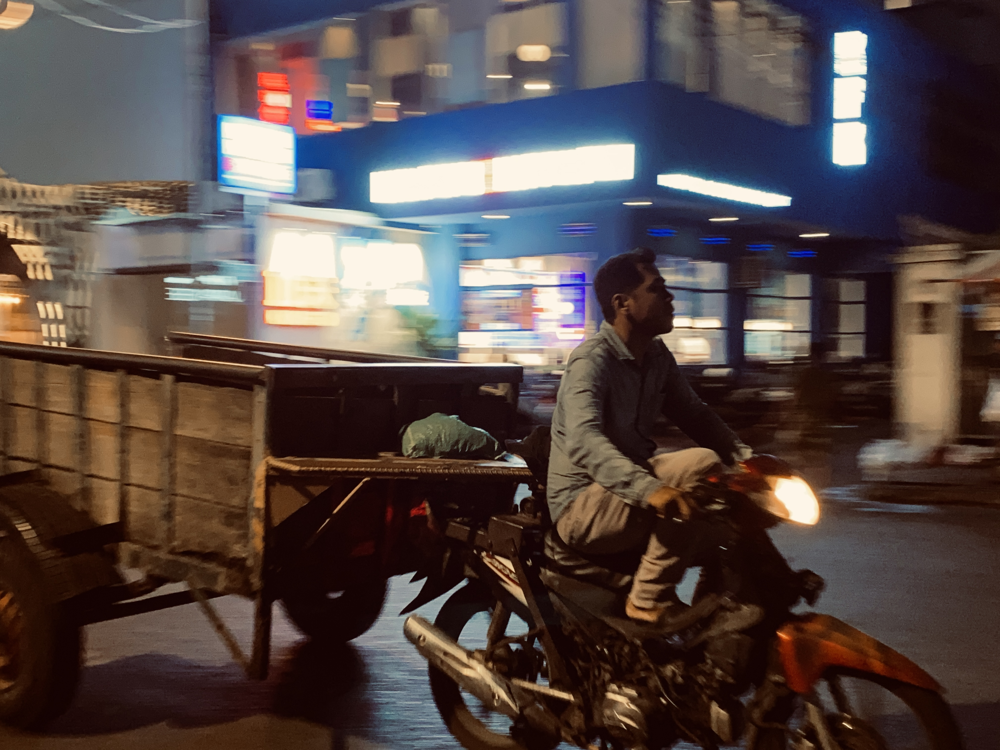

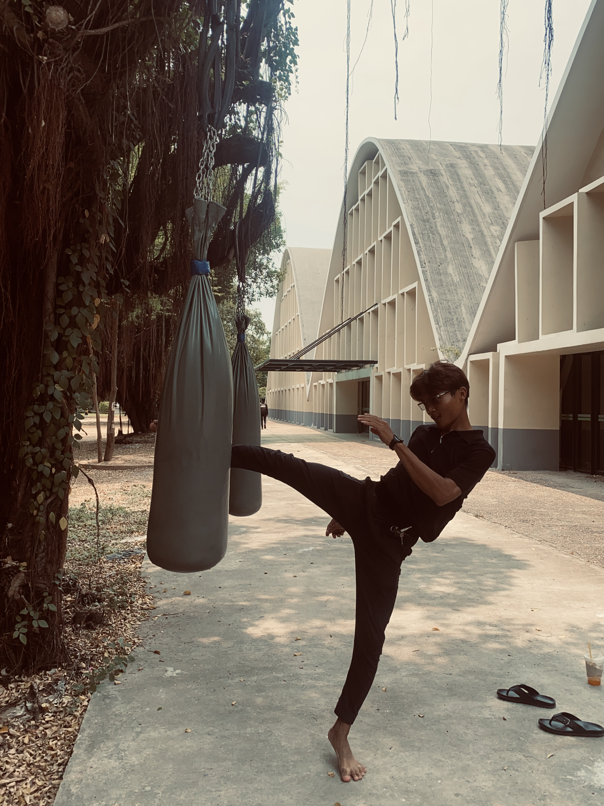
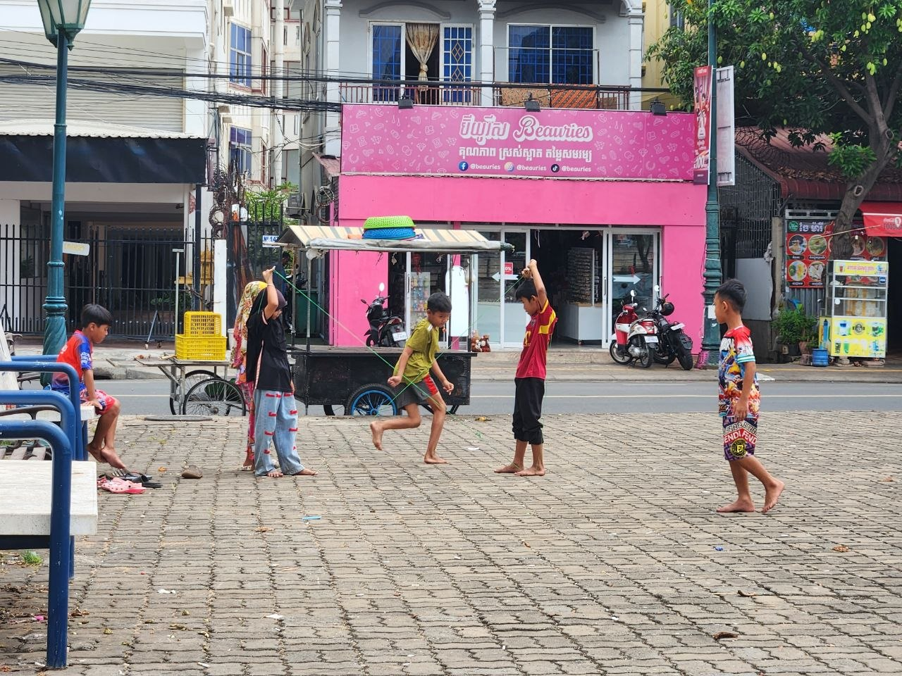

ការថតរូប Sunrise
5 Slides · ព្រឹកព្រលឹម & Golden Hour
Golden hour ជា 30-60 min បន្ទាប់ sunrise ។ ពន្លឺ warm, soft, low angle ។ Blue hour ជា 20 min មុន sunrise ។
- ចូល spot 30 min មុន sunrise
- Blue hour → moody, cool tones
- Golden hour → warm, flattering
- App "PhotoPills" ជួយ predict
Sunrise photography ត្រូវ expose correctly ។ Matrix/Evaluative metering + Exposure Compensation ។ RAW ជា must ។
- ISO 100-400 ចម្ការ noise
- f/8-f/16 ដើម្បី landscape sharp
- Shutter → adjust to sky exposure
- Shoot RAW + JPG ដូចគ្នា
GND (Graduated ND) filter ជួយ balance sky vs foreground ។ Tripod ជា essential ។ Remote shutter ។
- GND 3-stop → balance exposure
- Polarizer → cut glare, boost color
- Sturdy tripod on uneven ground
- Mirror lock-up ឬ electronic shutter
Foreground interest ជា key ។ Reflect water, silhouette, leading line ។ Rule of Thirds → sky/ground 2/3 ratio ។
- Foreground rock/plant → depth
- Silhouette subject ទៅ sky
- Horizon straight (ប្រើ gridline)
- Reflection ក្នុង water → mirror
Lightroom → boost warm tones, recover highlights, lift shadows ។ Graduated filter ចំ sky ។ Dehaze ។
- Highlights -70, Shadows +50
- HSL → boost Orange/Yellow
- Graduated filter darken sky
- Clarity +20 ដើម្បី depth
.JPG)
.JPG)
.JPG)
.JPG)
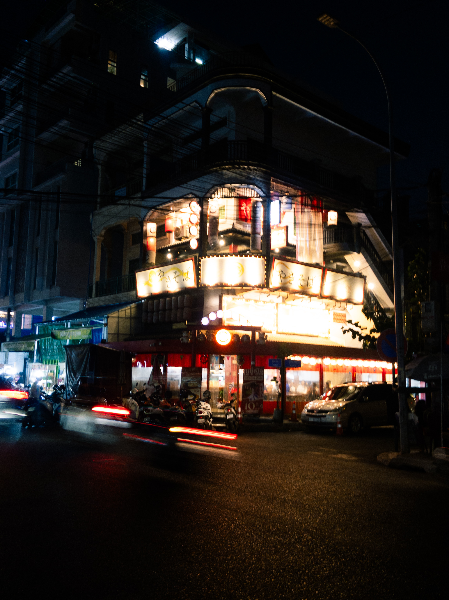
ការថតរូបដោយប្រើ Gridline (View Building)
5 Slides · ប្រើ Grid ដើម្បី Composition ល្អ
Grid 3x3 បែងចែក frame ។ ដាក់ subject ចំ intersection point (power point) ។ Horizon ដាក់ line ទី 1 ឬ ទី 2 ។
- Enable grid ក្នុង camera settings
- Eyes ចំ upper intersection
- Horizon ចំ ⅓ ឬ ⅔ mark
- Leading subject ទៅ center grid
Building photography → grid ជួយ align vertical & horizontal lines ។ Keystone distortion (tilting camera) ជៀស ។
- ប្រើ tilt-shift lens ឬ fix ក្នុង LR
- Level horizon ដោយ bubble level
- Vertical lines parallel ទៅ frame edge
- 2-point perspective ស្រស់
Center composition ល្អ ចំ subject symmetric ។ ផ្ទះ, ទ្វារ, tunnel, reflection ប្រើ center = powerful ។
- Symmetric subject → center ល្អ
- Tunnel/arch → center draw eye
- Reflection → perfect center
- Grid ជួយ verify center
Building lines (ជញ្ជាំង, ជណ្ដើរ, ផ្លូវ) ប្រើ leading lines ។ Grid ជួយ identify ។ Eye travel ទៅ subject ។
- Staircase, corridor, road → line
- Lines converge → vanishing point
- Grid align lines to frame edges
- ផ្ចិត ⅓ intersect ជាទូទៅ
Golden Ratio (Phi Grid) ជ្រើសល្អ ប៉ុន្ដែ Rule of Thirds ងាយ ។ Square grid ប្រើ Instagram format ។
- Phi Grid → organic, natural feel
- Square 1:1 → Instagram ready
- 4:5 → portrait-optimized social
- Crop ក្នុង post ដូច grid ណ
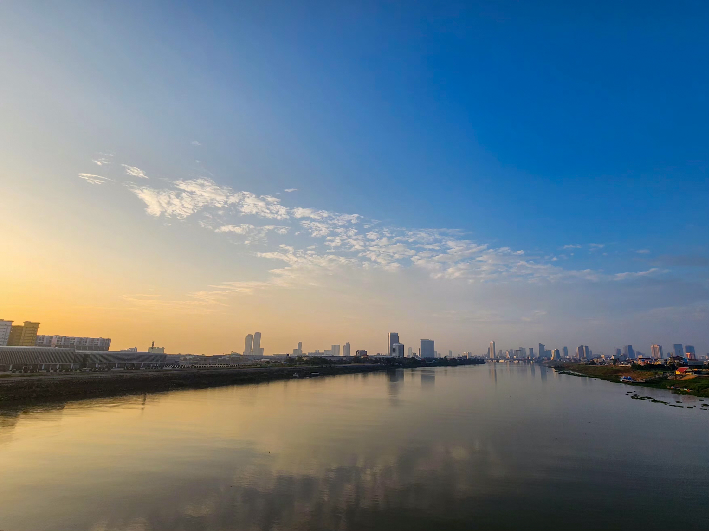
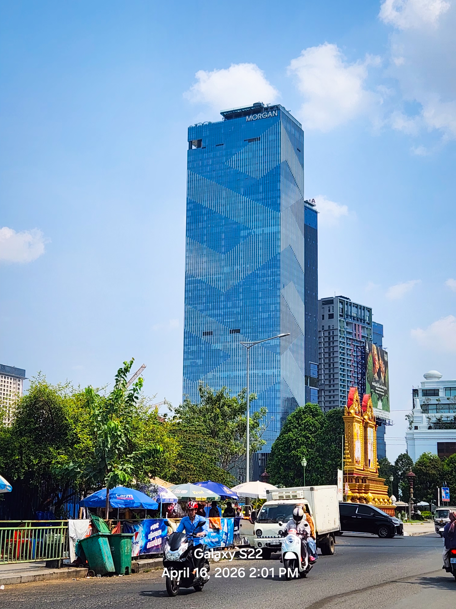
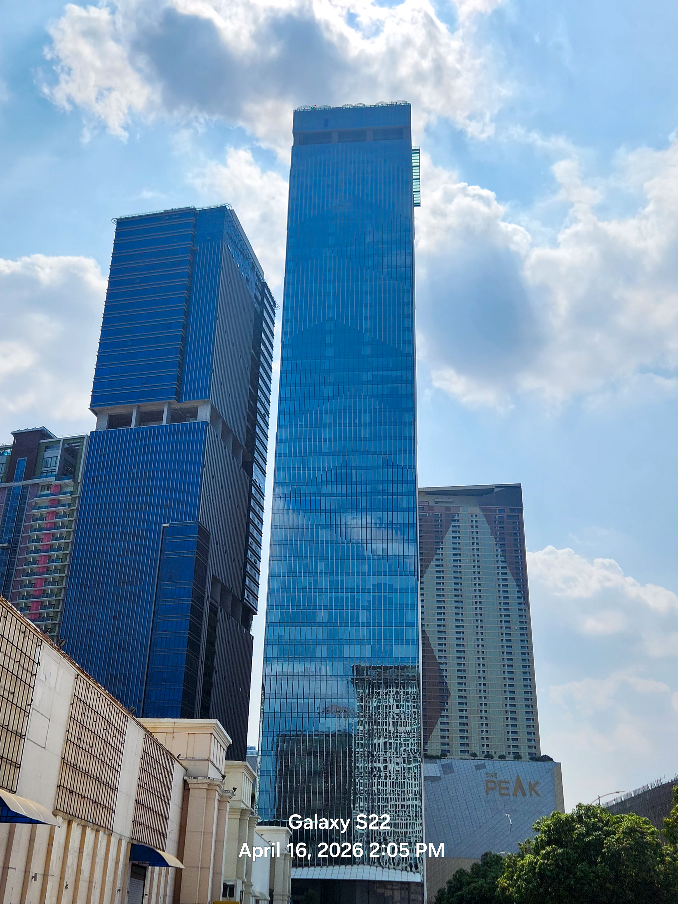

.jpg)
ការជ្រើសរើស Background (ល្អ និងមិនល្អ)
5 Slides · Background ប៉ះពាល់ message ទាំងអស់
Background ល្អ = simple, complement subject, ឥតរំខាន ។ Subject ទើបបង្ហាញ ។ Color harmony ។
Background ដែល distract = lines "growing" out of head, cluttered, bright spot, ឬ color clash ។ Subject បាត់ ។
Bokeh (blur background) ជា technique ដ៏ popular ។ ប្រើ wide aperture (low f-number), ្ ។ Subject ហើរ ពី BG ។
- f/1.4 – f/2.8 → beautiful bokeh
- Subject ឆ្ងាយ ពី BG ។
- Long focal length (85mm+) = more bokeh
- BG lights → circle bokeh balls
BG color ត្រូវ contrast subject ។ Dark subject → light BG ។ Light subject → dark BG ។ Color wheel → complementary ។
- Complementary colors → pop
- Analogous → harmony, soft
- Tone match → elegant
- B&W subject + color BG → drama
Nature (leaves, water, sky, wall texture) ជា BG ដ៏ versatile ។ ជ្រើស season, light, eo color ។ ហ្ន common ប៉ុន្ដែ effective ។
- Green leaves → fresh, natural
- Brick wall → urban, rustic
- Water/sky → open, free
- ប្រកបពណ៌ BG ស្ពឹក foreground
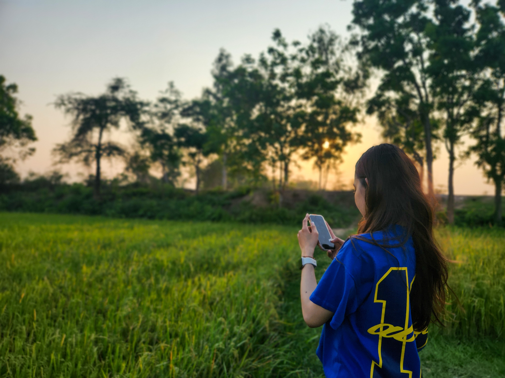
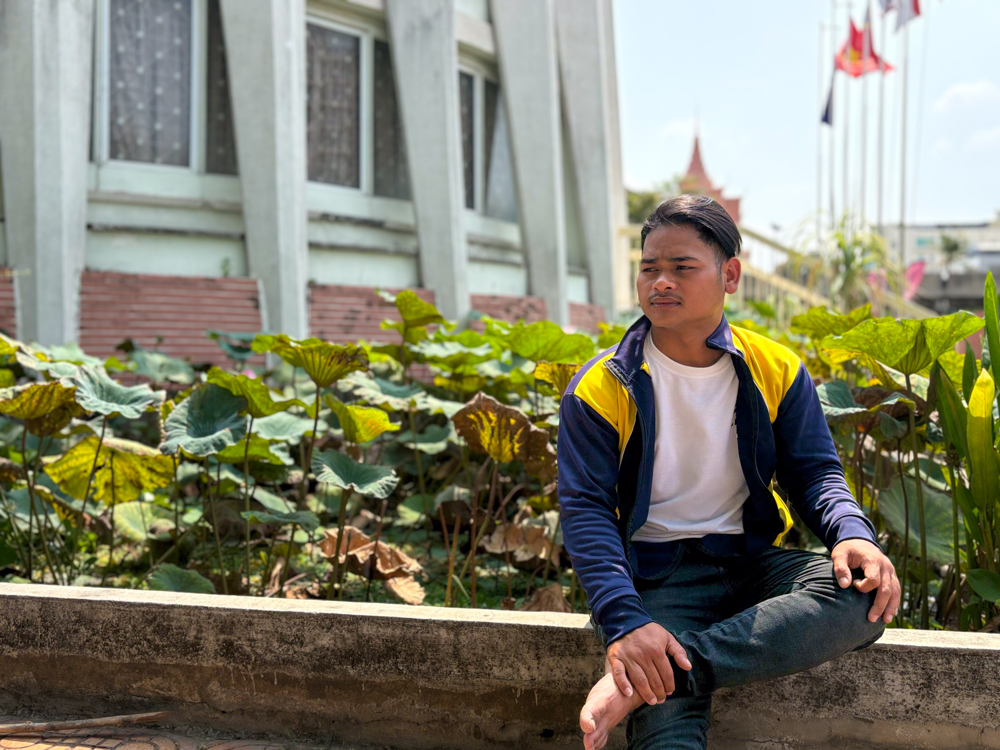
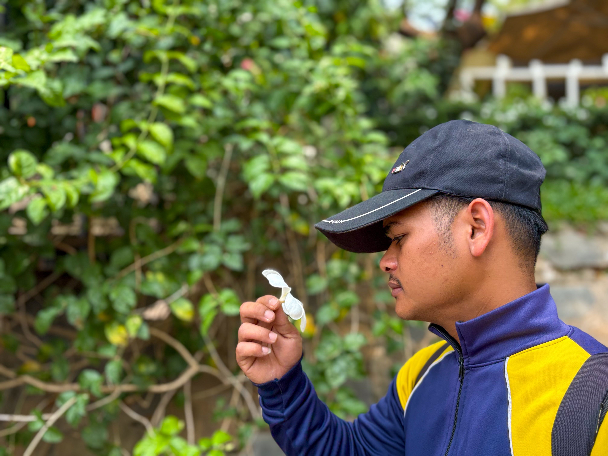
ការប្រើប្រាស់ Lens (Wide Angle & Telephoto)
5 Slides · Lens ខុសគ្នា → Story ខុសគ្នា
Wide angle (14-35mm) ចាប់ scene ធំ ។ Foreground ចូលច្រើន, depth exaggerated ។ Architecture, landscape, interior ។
- 14mm – 24mm → ultra wide, dramatic
- 35mm → street, natural FOV
- Distortion ចំ edge (ក្បាល distort)
- Include foreground → immersive
Telephoto (70-400mm+) ទាក់ subject ពីឆ្ងាយ ។ Background compress, bokeh beautiful ។ Wildlife, sport, portrait ។
- 70-200mm → portrait, event ideal
- 300-600mm → wildlife, bird
- Background compression → flatten look
- Image stabilization (IS/VR) ជា must
50mm ≈ human eye FOV ។ Natural perspective, versatile, low-light capable ។ ល្អ street, portrait, everyday ។
- f/1.8 affordable, sharp, fast
- Most natural looking photo
- Great for street & documentary
- Beginner "nifty fifty" recommended
Wide angle distort (barrel distortion) ។ Telephoto compress (telephoto compression) ។ ទាំងពីរ ប្រើ creative ។
- Wide → exaggerate near/far distance
- Telephoto → stack layers, compress
- Fisheye (8mm) → circular distort
- Fix distortion ក្នុង LR Lens Correction
ជ្រើស lens ទៅ use case ។ Portrait → 85mm ។ Landscape → 16-35mm ។ Street → 35mm ។ Wildlife → 300mm+ ។
- Portrait → 85mm f/1.4 (flattering)
- Landscape → 16-35mm wide
- Street → 35mm versatile
- Wildlife → 300-600mm telephoto
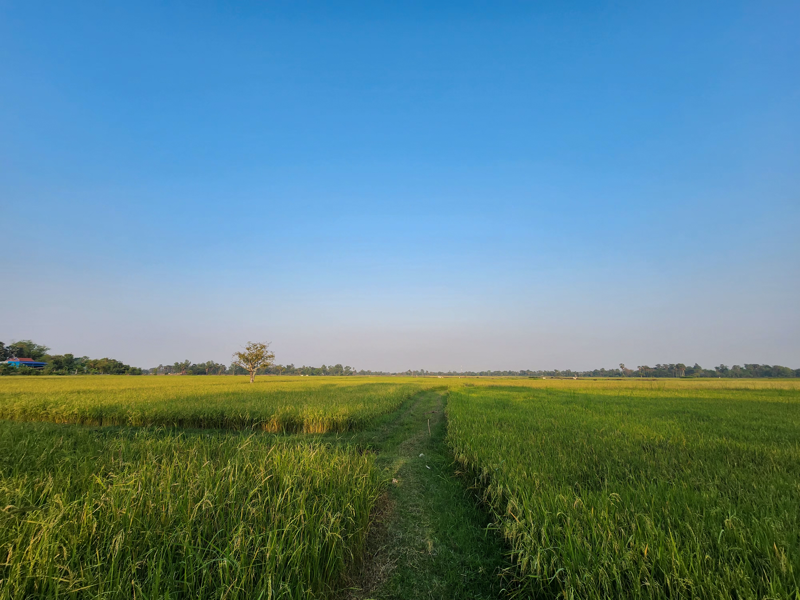

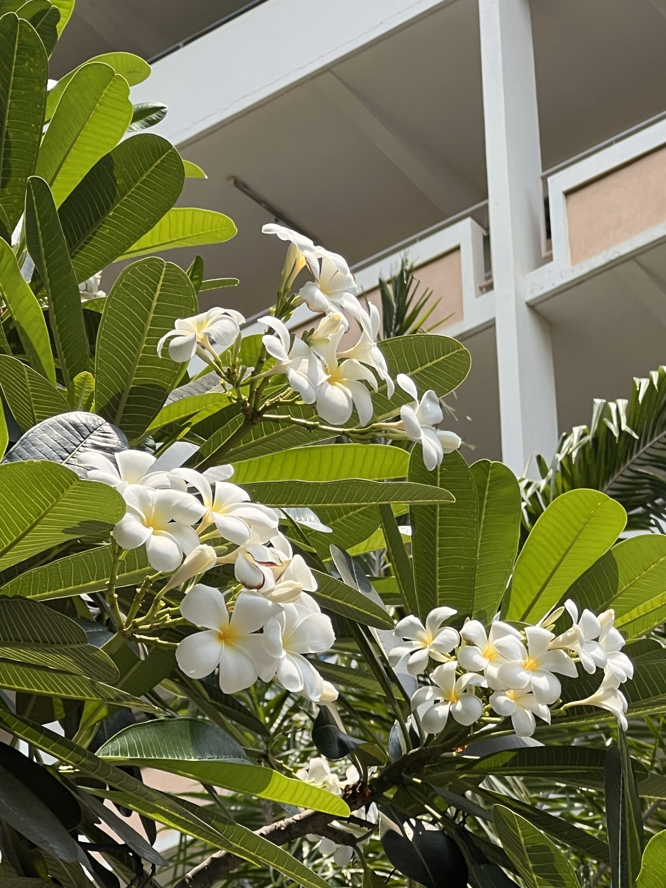
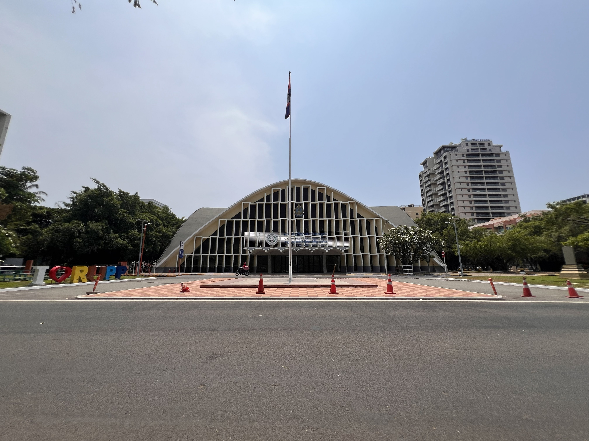
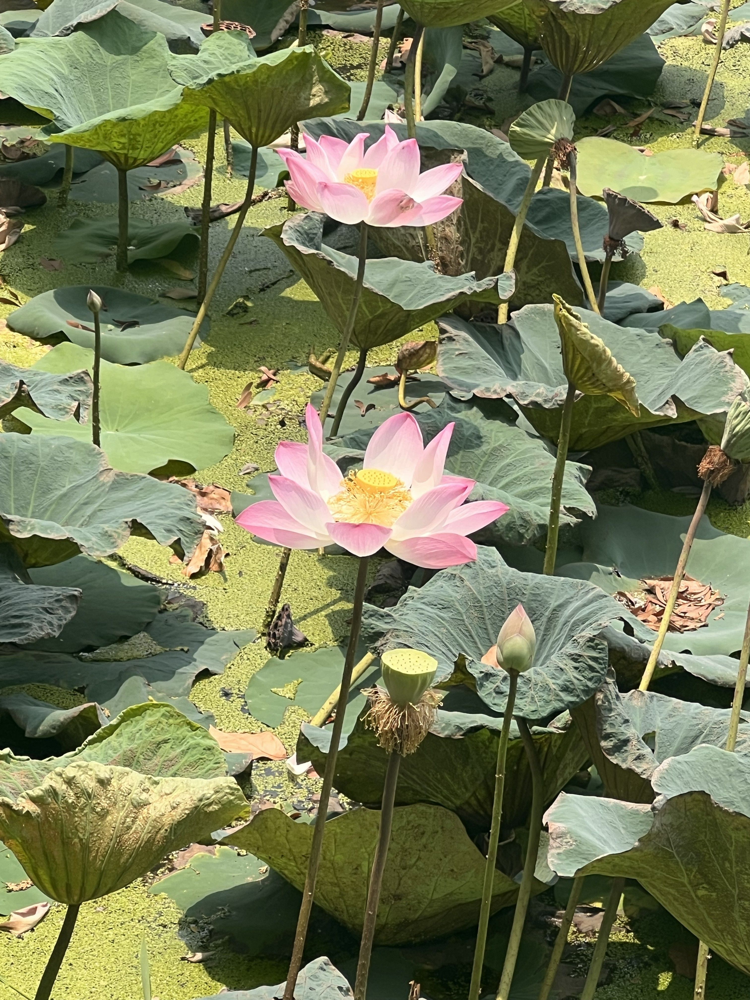
.JPG)
ការប្រើប្រាស់ ISO
5 Slides · ISO ប៉ះពាល់ Brightness & Noise
ISO = sensitivity ភ្នែករបស់ sensor ចំពោះពន្លឺ ។ ISO ខ្ពស់ = brighter ប៉ុន្ដែ noise ច្រើន ។ ISO ទាប = clean ។
- ISO 100 → cleanest, base ISO
- ISO 800-1600 → acceptable noise
- ISO 6400+ → visible grain/noise
- RAW file → recover noise better
ថ្ងៃ ប្រើ ISO 100-200 ។ ពន្លឺ abundant → ISO ទាប គ្រប់គ្រាន់ ។ Avoid high ISO ១ ចៀស grain ។
- Sunny day → ISO 100
- Overcast → ISO 200-400
- Open shade → ISO 400-800
- ប្រើ ND filter ចំ bright scene
ពន្លឺ ខ្យល់ (indoor, night) → ISO ត្រូវខ្ពស់ ។ Balance noise vs blur ។ Fast lens f/1.8 ជួយ ។
- Indoor → ISO 800-3200
- Night street → ISO 1600-6400
- Astro (milky way) → ISO 3200-12800
- Fast lens save ISO 1-2 stop
Auto ISO ជ្រើស ISO ស្វ័យ ។ Set max ISO, min shutter speed ។ Useful event, run-n-gun shooting ។
- Set Max ISO → 3200 ឬ 6400
- Set Minimum SS → 1/focal length
- Camera auto adjust properly
- ល្អ event, wedding, street
Denoise ក្នុង Lightroom AI, Topaz DeNoise ។ Shoot RAW → more detail ។ Stack photos → cleaner ។
- LR AI Denoise → 1-click clean
- Topaz Photo AI → best result
- In-camera NR → bake in JPG
- Expose to the right (ETTR) trick
.JPG)
.JPG)
.JPG)
.JPG)
.JPG)

ការប្រើប្រាស់ Shutter Speed
5 Slides · Shutter = Time ការexpose sensor
Shutter លឿន (1/500s+) freeze motion ។ ប្រើ sport, action, bird, splash water, freeze expressions ។
- 1/500s → ចល ធម្មតា
- 1/1000s → sport, cycling
- 1/4000s → bird in flight, splash
- Trade-off: ត្រូវ higher ISO/aperture
Shutter យឺត (1/30s ឬ ទាប) blur motion ។ ទឹក silk, traffic light trails, star trails ។ Tripod ជា must ។
- 1/8 – 1/2s → silky waterfall
- 1-10s → light trails, traffic
- 15-30s → milky way, astro
- Tripod + remote = no shake
Rule: Minimum SS = 1/focal length ។ 50mm → min 1/50s ។ 200mm → min 1/200s ។ IS/VR ជួយ 2-5 stop ។
- 50mm → 1/50s minimum
- 200mm → 1/200s minimum
- IS/VR → ។add 2-4 stop safety
- Brace elbows → extra stability
Video → 180° rule = SS ២ ដង fps ។ 24fps → 1/50s ។ 60fps → 1/120s ។ ND filter ចំ bright day ។
- 24fps → 1/50s shutter
- 60fps → 1/120s shutter
- ND 3-stop filter ប្រើ bright
- Motion blur → cinematic feel
Bulb mode = SS hold ដោយ remote ។ ប្រើ fireworks, light painting, star trails ។ ក្រៅពី 30s limit ។
- Fireworks → 2-4s ទំនង
- Light painting → 5-30s
- Star trails → 30min+ stacked
- ចៀស vibration ។ remote release
.JPG)
ការប្រើប្រាស់ WB (White Balance) ថតរូប Sunset
5 Slides · WB ប៉ះពាល់ Mood & Color
WB = adjust color cast ដើម្បី white ហ្នឹង white ។ Kelvin temperature: cool (blue) → warm (orange/red) ។
- 2000-4000K → cool, tungsten
- 5000-6000K → daylight, neutral
- 7000-9000K → warm, cloudy
- AWB → auto (safe, adjust later)
Sunset WB: ប្រើ "Cloudy" (7000K+) ដើម្បី enhance warm tones ។ Auto WB cool sunset ។ Manual better ។
- Cloudy WB → golden warm tones
- Shade WB → even warmer 7500K
- AWB → often de-saturate sunset
- Custom 6000-8000K → manual control
RAW → WB adjust non-destructive ។ ប្រើ Lightroom Temperature slider ។ Shoot RAW ។ ១ change later ។
- LR → Basic → Temp & Tint
- Cool → pull slider left (blue)
- Warm → pull slider right (yellow)
- Match WB across multiple shots
Camera WB presets ។ Daylight/Auto ។ Tungsten (incandescent) ។ Fluorescent ។ Flash ។ ជ្រើស match source ។
- Daylight 5500K → outdoor sun
- Tungsten 3200K → indoor bulb
- Flash 5500K → strobe light
- Gray Card → custom accurate WB
WB ជា creative tool ។ Cool WB → moody cinematic ។ Warm WB → cozy, romantic ។ Intentionally "wrong" = style ។
- Cool / blue tone → sad, dramatic
- Warm / orange tone → nostalgic
- Split toning → dual color grade
- WB + LUT → cinematic look
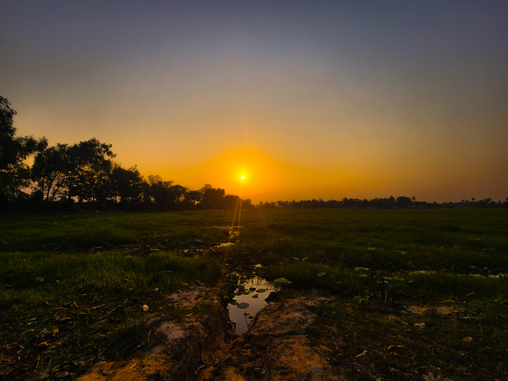
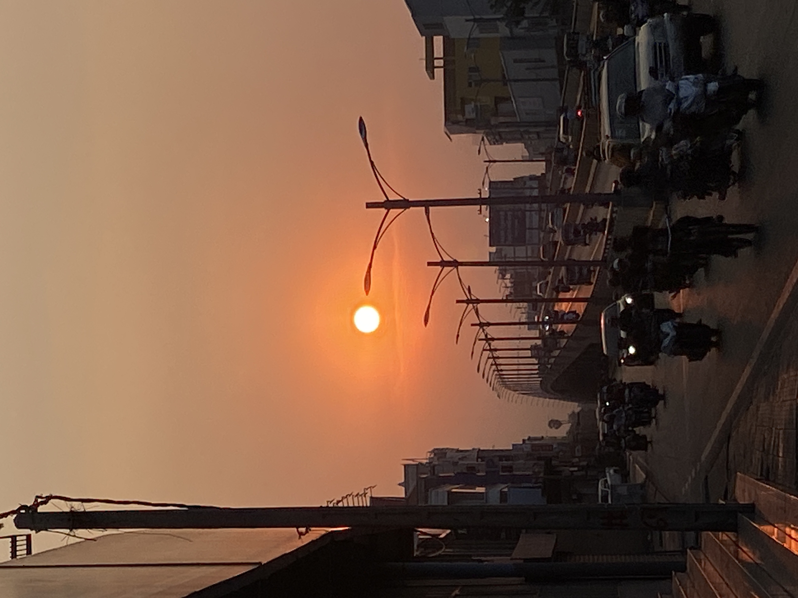
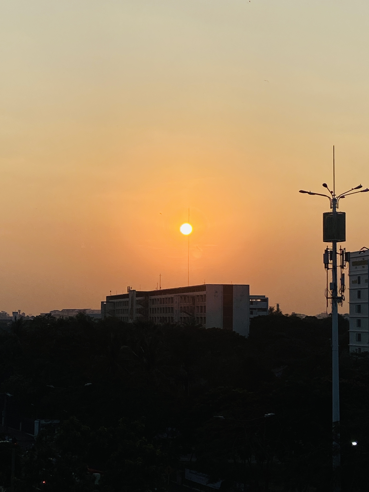
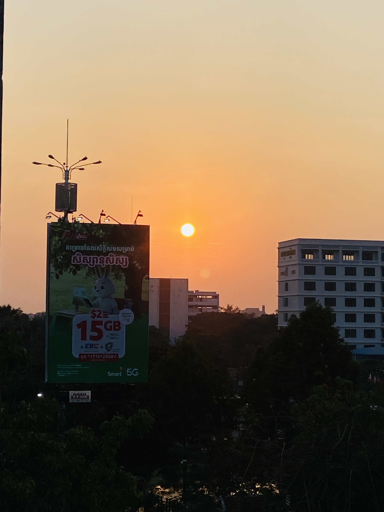
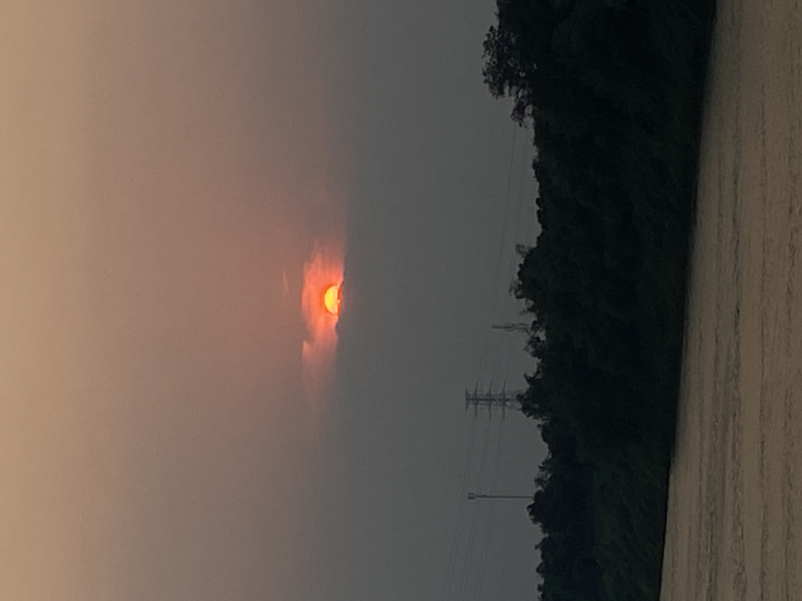
ការថតរូបដោយប្រើប្រាស់ពន្លឺ (Focus & ការគ្រប់គ្រងពន្លឺ)
5 Slides · Foreground · Middle · Background · Depth of Field
រូបភាពល្អ = 3 layers ។ Foreground (ដំបូង) → Middle (subject) → Background (ក្រោយ) ។ ជំរៅ & dimension ។
- Foreground → depth, context
- Middle ground → main subject
- Background → mood, setting
- 3 layers = professional depth
Deep DOF → ទាំង Foreground, Middle, Background ច្បាស់ ។ ប្រើ f/8-f/16, wide lens, focus ⅓ ចូល ។
- f/8 – f/16 → all sharp
- Wide angle lens → more DOF
- Hyperfocal distance → maximize
- Landscape, architecture prefer
Shallow DOF → subject ច្បាស់ BG blur ។ ប្រើ f/1.4-f/2.8, telephoto, subject ឆ្ងាយ ពី BG ។
- f/1.4 – f/2.8 → extreme blur
- Telephoto → more compression blur
- Subject ឆ្ងាយ BG → more blur
- Portrait, food, product → love
Exposure Triangle = ISO + Aperture + Shutter ។ Balance ទាំងបី ។ Histogram = ប្រើ monitor exposure ។
- Histogram → expose correctly
- ETTR → expose to the right
- Spot metering → tough light
- Exposure Comp (+/-) → fine tune
Focus ត្រូវ ។ Eyes → focus point ។ Back Button Focus (BBF) ។ Manual focus ។ Focus peaking ។
- Always focus on the eyes (portrait)
- Back button focus (BBF) control
- Manual focus + focus peaking
- Live view magnify → precision

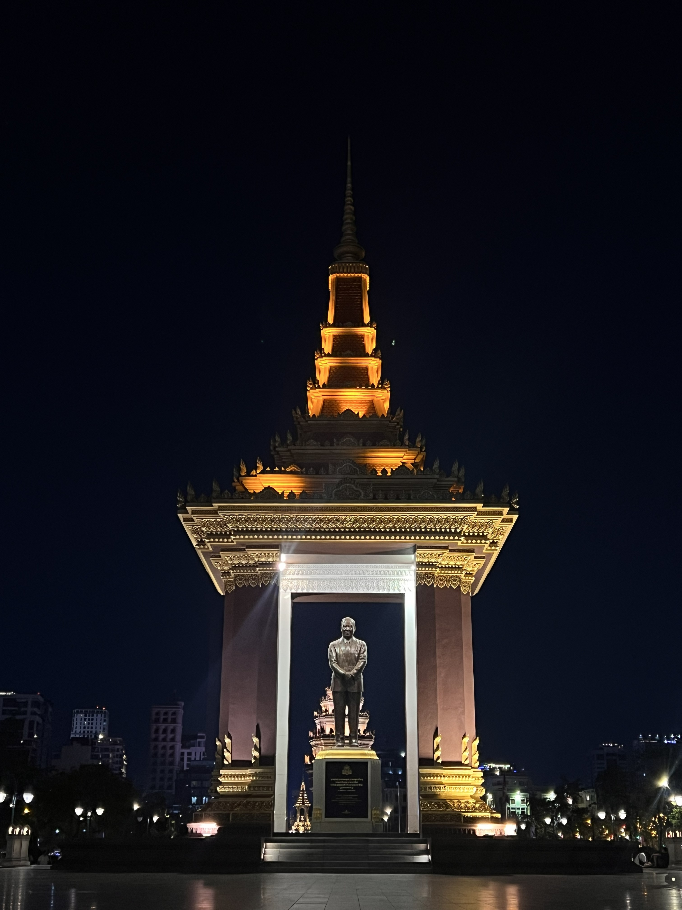
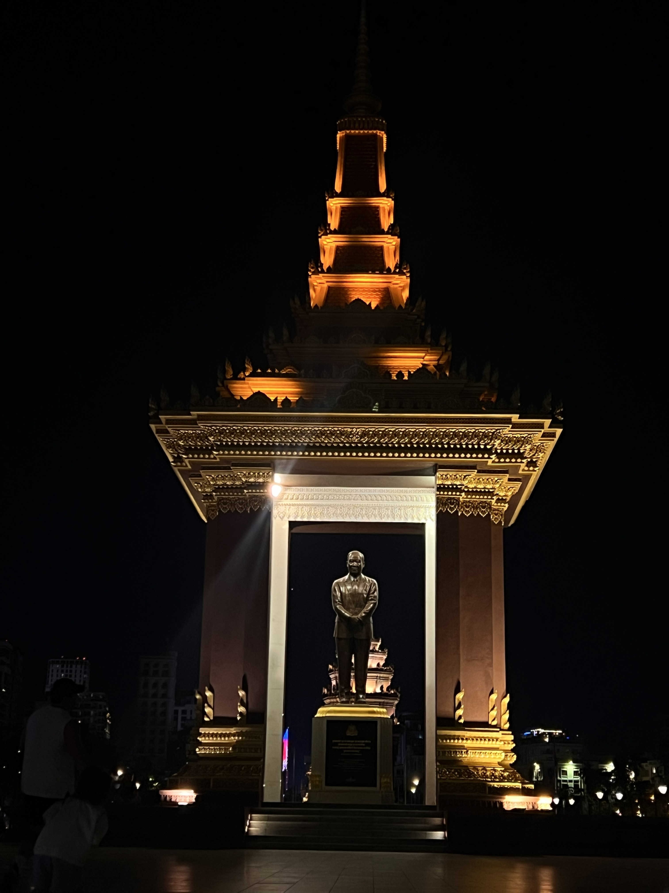


Depth & Context
ច្បាស់ ឬ ព្រាល
Focus ត្រូវ Sharp
Story Center
Support Subject
Bokeh ឬ Sharp